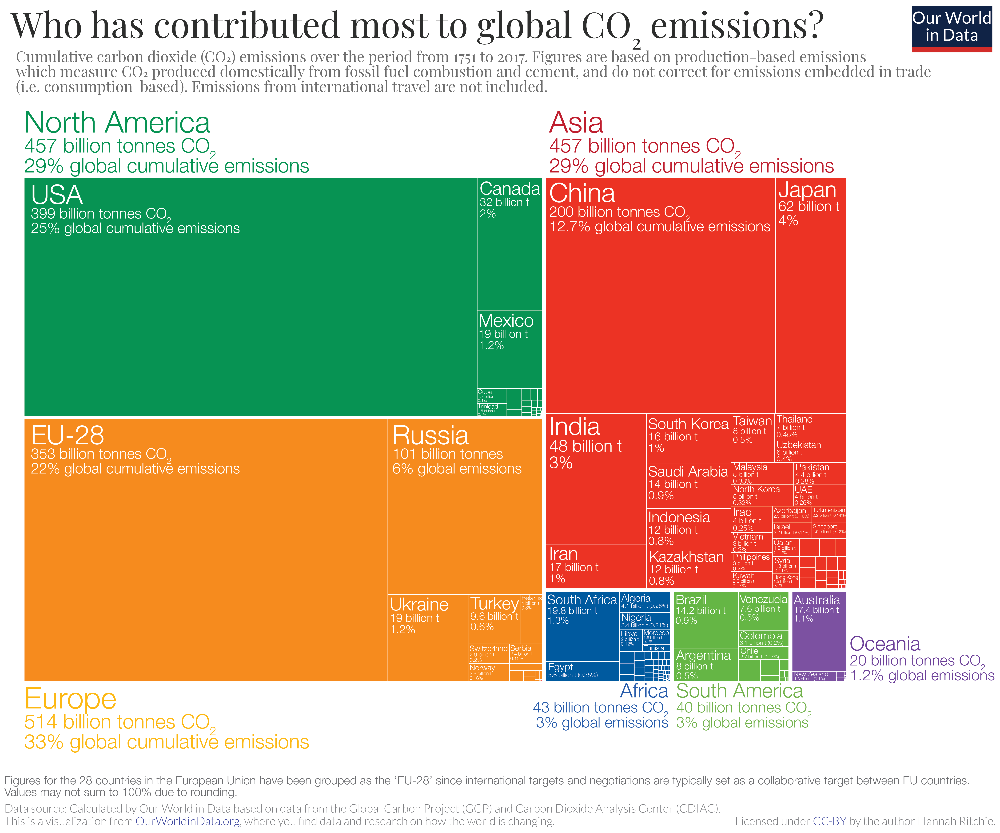

Radical Action
Oil Money in Politics
The United States government has known that the burning of fossil fuels would cause catastrophic effects within the century since 1988, when James Hansen, a scientist at NASA testified to congress. He warned that we would need to drastically reduce the amount of emissions we released into the atmosphere immediately in order to curb the effects on our climate. In 1988, the United States emitted 4.89 billion tons of CO2, which is more than 3 times the amount the rest of all countries in both American continents emitted that year. We were the second highest emitter per capita in the entire world. Instead of taking this news to heart and acting upon it, the United States actually increased emissions in the next decade, getting up to 5.75 billion tons of CO2 emitted in 1998. Even now, 30 years later, we’re still emitting more CO2 than we did when Hansen testified. The United States accounts for 25% of all cumulative emissions worldwide, yet we only account for 4% of the global population. How is this possible?
Fossil fuel companies have secured their futures by investing in politicians. They funnel money into campaigns and make far more than they spent back in subsidies. In the 113th congress, fossil fuel companies spent $42 million on congressional campaigns. During the same time frame, they received $41.8 billion in subsidies from the US government. This is an almost 120:1 return on investment. We are making it too easy for fossil fuels to succeed. If you think the free market is what causes our energy to come from fossil fuels rather than renewable resources, take a look at the actual costs.

If you factor subsidies out of the equation, solar and wind power became cheaper than coal, nuclear and gas energy over the lifetime of an energy facility in 2016. Not to mention, burning fossil fuels creates other costs that are not reflected in the market price of their energy. In 2015 alone, it’s estimated that greenhouse gas emissions adversely costed the planet $5.3 trillion in environmental, climate and public health impacts. The technology in this case is not the problem, it’s the deeply entrenched political money from fossil fuel companies. If you’re curious about the logistics of how fossil fuel companies receive government money, check out this article about fossil fuel subsidies.